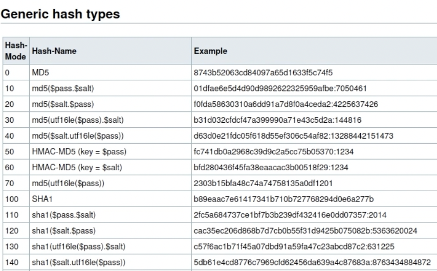

Cracking Passwords with Hashcat

So the first thing I want to do in this blog is to give an introduction as to how hashing works and collision attacks and how you can try to figure out the source string to a certain hash. When you hash a string, you are basically sending it through a one way function where you take the string and then it outputs a fixed size string that is completely different from your source string. Now why would you do this? You would do this so you can safely store your hash in a directory like /etc/passwd where even if an attacker gets access to it, the hash is so weird that they cant decipher it (in theory). However, attackers learned that if you throw enough random words into the same hash function used, you can find the hashed string and find the source string. This is basically what hashcat does.
So we are given the hash above, lets say we got this when someone leaked a /etc/passwd database and we retrieved this password thinking it is a password for a user account. Alright so just looking at the hash itself, I can see that its 32 hex characters long which is 16 bytes since each character takes up 4 bits. Alright knowing this I know thats its probably a md5 hash function. Now I just need to know what I can put inside a md5 hash function to get this output. Basically a plug and chug. I'm going to use the hashcat command then followed by the flag -m to select the type of mode. Now you might be wondering, "Harit, how am I supposed to know what type of mode to use?". Good question! You can literally look up the mode on the hashcat website and see what types of modes there are and what modes you should pick for the types of hashes that you are dealing with.
So mode 0, or the md5 mode deals with hashes that are 32 hex characters long and thats the one we are dealing with right now! So before I continue with the command, I just want to explain real quick the whole syntax of the hashcat command. So first you would do hashcat [flags] [mode] [file that has hashes] and then [the file that has the plaintext passwords that you wanna plug into the hashcat command to see if it matches]. For the last part of the command, im going to be using a built in file thats already in kali linux. You can find this file in the directory /usr/share/wordlists. Now this file is called the rockyou.txt. Now a while ago there was this huge dataleak that compromised a lot of passwords and in the rockyou file, there was a lot of passwords that you can plug into the md5 function to see if it matches your current hash.
I inputed the whole command to the terminal and you can see that hashcat is starting up. When it completes you can see that the hash that we were trying to crack was "password". Cool!